SASS é uma extensão do CSS que empodera o CSS básico.
É um pré-processador de CSS, como o Less.
Permite o uso de variáveis, funções, cálculos e hierarquia.
É um Gem do Ruby, ou seja, uma biblioteca escrita em Ruby.
Site do SASS, que tem toda sua documentação: SASS
No site você vai ter toda as informações de como instalar, como usar, etc...
Como usar o SASS
Pega o arquivo scss ou sass compila para css
Isso é feito em por você mesmo no código.
Mas você usar site online, pré-processadores para fazer essas conversões,
não é ideal, use somente para praticar.
Links dos site que fazem esse pré-processamento: SCSS para CSS JSON formatter
A imagem do site é bem parecida com o outro site, funcionamento é praticamente igual.
Há vários outros sites compiladores, que fazem isso.
Você pode usar plugin para VScode: Live Sass Compiler
* Procure nas extensãoes do VScode, e instala ele.
* Vai converter automaticamente o scss para css.
Exemplo do código html de uma página só para testar o plugin:
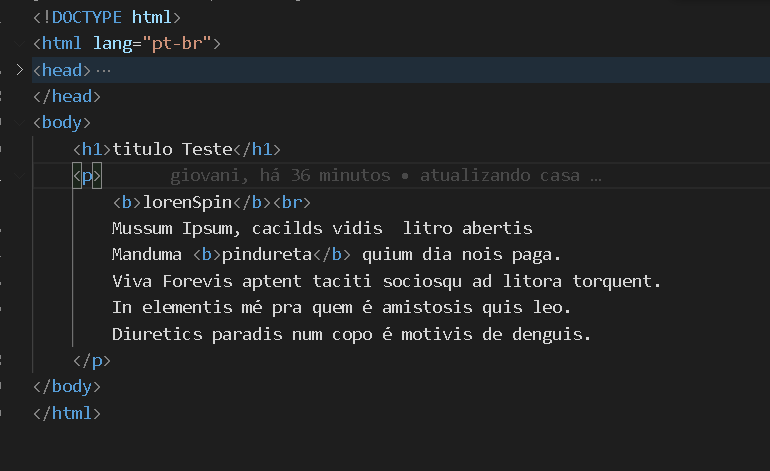
Exemplo do código de scss só para testar o plugin:
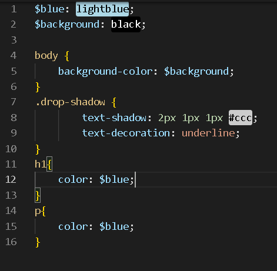
No VScode, depois de instalado o plugin, você clicar o Watching...,
que fica lá embaixo perto do terminal.
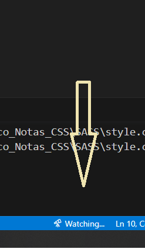
Ao clicar no "botão" será feita a conversão, de SCSS para CSS se o scss estiver correto.
O próprio VScode cria o style.css com os códigos do SCSS.
Para a variável se usa o $ e não o "@", como em outras linguagens.
Permiti usar o .sass e .scss.
* .scss é mais parecido com a sintaxe do CSS e Less, é a que usaremos.
Exemplo:
// setando a cor dentro da variável $cor: red;
.item { -> item -> seria a tag.
______ color: $cor; -> colocar a cor que está na variável "$cor" }
Veja o print do código, do documento:
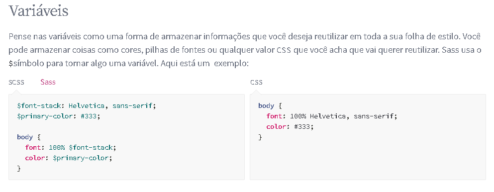
* .sass é mais parecido com a sintaxe do Pub, ou seja, sem abertura.
Exemplo:
// setando a cor dentro da variável $cor: red;
.item
______ color: $cor; -> colocar a cor que está na variável "$cor"
*** Não precisa abrir e fechar as tags
Veja o print do código, do documento:
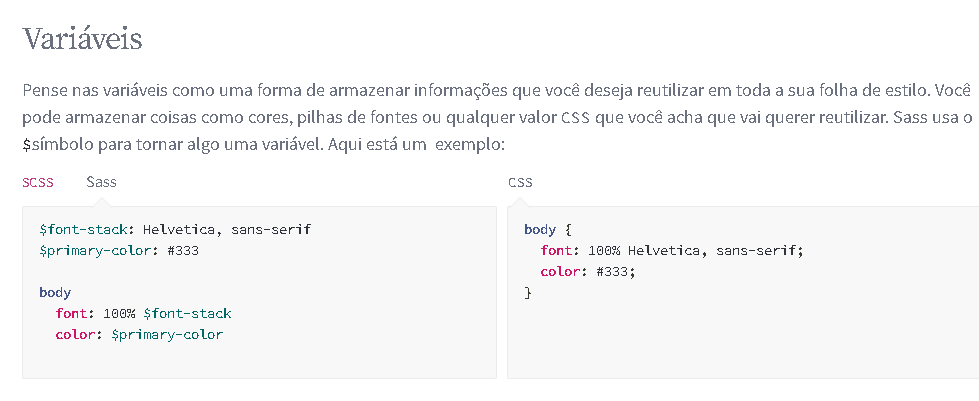
No documento do SASS, você terá mais exemplos de como fica os códigos, se for: .scss ou .sass.
Link para o site, e ter acesso ao documento: Site SASS
SASS Funções => Mixin
Para usar o mixin.
Temos que declarar ele no inicio antes de usar, veja como deve ser declarado:
Veja como fica o código no formato CSS depois de converter:
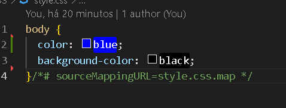
SASS Funções => Hierarquia
Pode ser usado de forma mais intuitiva, colocando um dentro do outro.
*Sintaxe: .tipo {
____ @include fundoP($cor2)
____ a {
__________ color: $cor;
_____ } }
Veja o print do código, style.scss:
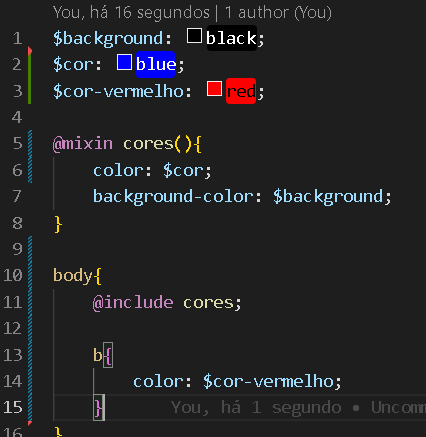
Na página fica assim:
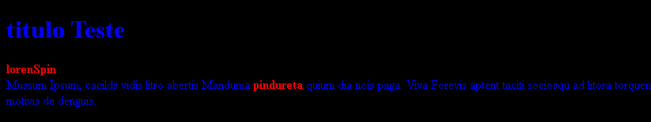
* Pode ser adicionado mais coisas dentro, isso é apenas um simples exemplo.
SASS Funções => Hierarquia
É possivel fazer o uso de imports.
* @use 'base';
* @import 'base'; /* este está em desuso */
Ao contrário das importações de CSS simples, que exigem que o navegador,
faça solicitações HTTP a medida que renderiza sua página.
Aqui importa tudo de uma vez, visto que irá se torna só um arquivo CSS.
* No exemplo, foi criado mais três arquivos em cada um deles,
será aplicado códigos SCSS diferentes. _base1.scss
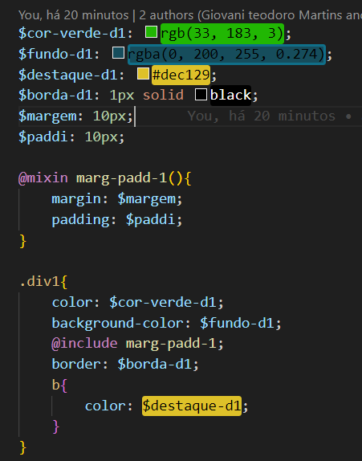
_base2.scss:
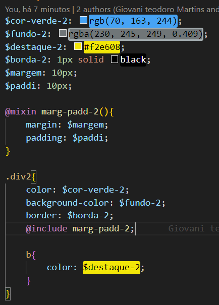
base3.scss:
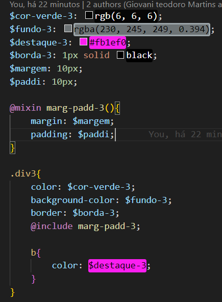
Ai no arquivo principal style.scss, você importa os outros que foram criado,
formando todo o CSS dá página, no exemplo separei para ver melhor. style.scss